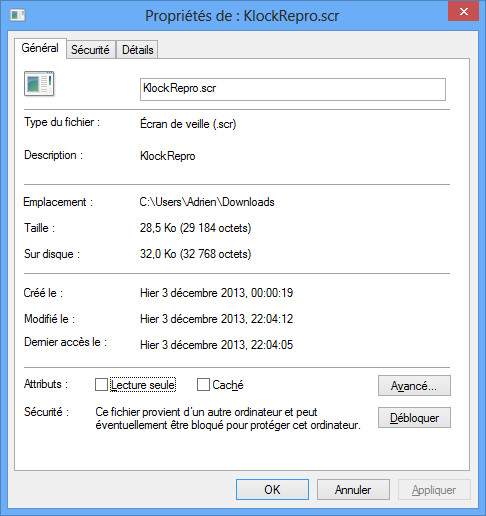
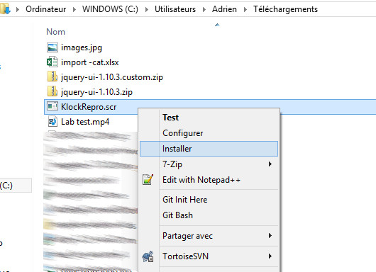

Ecran de veille de "il est l'heure"
albalblabalbalbalablablablabalbalbalbalablabla


Détails d'installation
1.
Il se peut que le fichier .scr soit bloquer par Windows.Pour le débloquer, il faut accéder aux propriétés du fichier .scr, puis cliquer sur le bouton "Débloquer", qui se trouve vers le bas de la fenètre.

2.
Ensuite il ne reste plus qu'a installer l'écran de veille.Pour ce faire, il suffit de faire un clique droit sur le fichier .scr, puis "installer" dans le menu contextuel.
